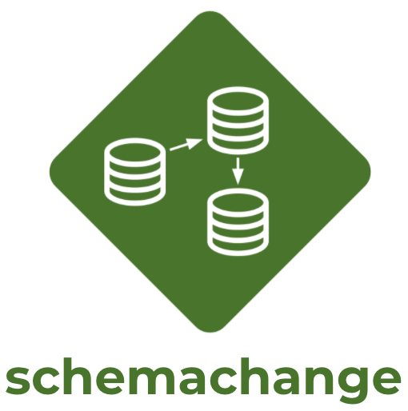
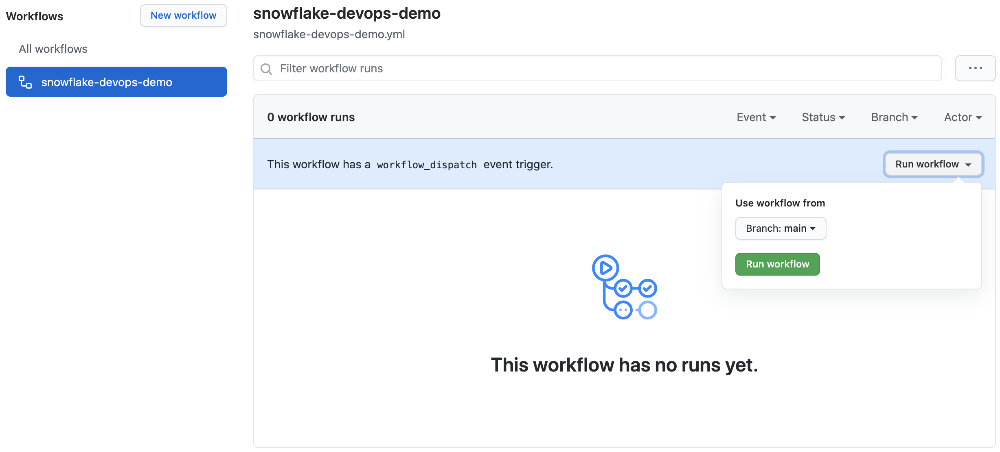

This guide will provide step-by-step instructions for how to build a simple CI/CD pipeline for Snowflake with GitHub Actions. My hope is that this will provide you with enough details to get you started on your DevOps journey with Snowflake and GitHub Actions.
DevOps is concerned with automating the development, release and maintenance of software applications. As such, DevOps is very broad and covers the entire Software Development Life Cycle (SDLC). The landscape of software tools used to manage the entire SDLC is complex since there are many different required capabilities/tools, including:
- Requirements management
- Project management (Waterfall, Agile/Scrum)
- Source code management (Version Control)
- Build management (CI/CD)
- Test management (CI/CD)
- Release management (CI/CD)
This guide will focus primarily on automated release management for Snowflake by leveraging the GitHub Actions service from GitHub. Additionally, in order to manage the database objects/changes in Snowflake I will use the schemachange Database Change Management (DCM) tool.
Let's begin with a brief overview of GitHub and schemachange.
Prerequisites
This guide assumes that you have a basic working knowledge of Git repositories.
What You'll Learn
- A brief history and overview of GitHub Actions
- A brief history and overview of schemachange
- How database change management tools like schemachange work
- How a simple release pipeline works
- How to create CI/CD pipelines in GitHub Actions
- Ideas for more advanced CI/CD pipelines with stages
- How to get started with branching strategies
- How to get started with testing strategies
What You'll Need
You will need the following things before beginning:
- Snowflake
- A Snowflake Account.
- A Snowflake Database named DEMO_DB.
- A Snowflake User created with appropriate permissions. This user will need permission to create objects in the DEMO_DB database.
- GitHub
- A GitHub Account. If you don't already have a GitHub account you can create one for free. Visit the Join GitHub page to get started.
- A GitHub Repository. If you don't already have a repository created, or would like to create a new one, then Create a new respository. For the type, select
Public(although you could use either). And you can skip adding the README, .gitignore and license for now. - Integrated Development Environment (IDE)
- Your favorite IDE with Git integration. If you don't already have a favorite IDE that integrates with Git I would recommend the great, free, open-source Visual Studio Code.
- Your project repository cloned to your computer. For connection details about your Git repository, open the Repository and copy the
HTTPSlink provided near the top of the page. If you have at least one file in your repository then click on the greenCodeicon near the top of the page and copy theHTTPSlink. Use that link in VS Code or your favorite IDE to clone the repo to your computer.
What You'll Build
- A simple, working release pipeline for Snowflake in GitHub Actions

GitHub
GitHub provides a complete, end-to-end set of software development tools to manage the SDLC. In particular GitHub provides the following services (from GitHub's Features):
- Collaborative Coding
- Automation & CI/CD
- Security
- Client Apps
- Project Management
- Team Administration
- Community

GitHub Actions
"GitHub Actions makes it easy to automate all your software workflows, now with world-class CI/CD. Build, test, and deploy your code right from GitHub. Make code reviews, branch management, and issue triaging work the way you want" (from GitHub's GitHub Actions). GitHub Actions was first announced in October 2018 and has since become a popular CI/CD tool. To learn more about GitHub Actions, including migrating from other popular CI/CD tools to GitHub Actions check out Learn GitHub Actions.
This guide will be focused on the GitHub Actions service.

Database Change Management (DCM) refers to a set of processes and tools which are used to manage the objects within a database. It's beyond the scope of this guide to provide details around the challenges with and approaches to automating the management of your database objects. If you're interested in more details, please see my blog post Embracing Agile Software Delivery and DevOps with Snowflake.
schemachange is a lightweight Python-based tool to manage all your Snowflake objects. It follows an imperative-style approach to database change management (DCM) and was inspired by the Flyway database migration tool. When schemachange is combined with a version control tool and a CI/CD tool, database changes can be approved and deployed through a pipeline using modern software delivery practices.
For more information about schemachange please see the schemachange project page.
Open up your cloned repository in your favorite IDE and create a folder named migrations. In that new folder create a script named V1.1.1__initial_objects.sql (make sure there are two underscores after the version number) with the following contents:
CREATE SCHEMA DEMO;
CREATE TABLE HELLO_WORLD
(
FIRST_NAME VARCHAR
,LAST_NAME VARCHAR
);
Then commit the new script and push the changes to your GitHub repository. Assuming you started from an empty repository, your repository should look like this:

Action Secrets in GitHub are used to securely store values/variables which will be used in your CI/CD pipelines. In this step we will create secrets for each of the parameters used by schemachange.
From the repository, click on the Settings tab near the top of the page. From the Settings page, click on the Secrets tab in the left hand navigation. The Actions secrets should be selected. For each secret listed below click on New repository secret near the top right and enter the name given below along with the appropriate value (adjusting as appropriate).
Secret name | Secret value |
SF_ACCOUNT | xy12345.east-us-2.azure |
SF_USERNAME | DEMO_USER |
SF_PASSWORD | ***** |
SF_ROLE | DEMO_ROLE |
SF_WAREHOUSE | DEMO_WH |
SF_DATABASE | DEMO_DB |
When you're finished adding all the secrets, the page should look like this:

Action Workflows represent automated pipelines, which inludes both build and release pipelines. They are defined as YAML files and stored in your repository in a directory called .github/workflows. In this step we will create a deployment workflow which will run schemachange and deploy changes to our Snowflake database.
- From the repository, click on the
Actionstab near the top middle of the page. - Click on the
set up a workflow yourself ->link (if you already have a workflow defined click on thenew workflowbutton and then theset up a workflow yourself ->link) - On the new workflow page
- Name the workflow
snowflake-devops-demo.yml - In the
Edit new filebox, replace the contents with the the following:
- Name the workflow
name: snowflake-devops-demo
# Controls when the action will run.
on:
push:
branches:
- main
paths:
- 'migrations/**'
# Allows you to run this workflow manually from the Actions tab
workflow_dispatch:
jobs:
deploy-snowflake-changes-job:
runs-on: ubuntu-latest
steps:
# Checks-out your repository under $GITHUB_WORKSPACE, so your job can access it
- name: Checkout repository
uses: actions/checkout@v2
- name: Use Python 3.8.x
uses: actions/setup-python@v2.2.1
with:
python-version: 3.8.x
- name: Run schemachange
env:
SF_ACCOUNT: ${{ secrets.SF_ACCOUNT }}
SF_USERNAME: ${{ secrets.SF_USERNAME }}
SF_ROLE: ${{ secrets.SF_ROLE }}
SF_WAREHOUSE: ${{ secrets.SF_WAREHOUSE }}
SF_DATABASE: ${{ secrets.SF_DATABASE }}
SNOWFLAKE_PASSWORD: ${{ secrets.SF_PASSWORD }}
run: |
echo "GITHUB_WORKSPACE: $GITHUB_WORKSPACE"
python --version
echo "Step 1: Installing schemachange"
pip install schemachange
echo "Step 2: Running schemachange"
schemachange -f $GITHUB_WORKSPACE/migrations -a $SF_ACCOUNT -u $SF_USERNAME -r $SF_ROLE -w $SF_WAREHOUSE -d $SF_DATABASE -c $SF_DATABASE.SCHEMACHANGE.CHANGE_HISTORY --create-change-history-table
Finally, click on the green Start commit button near the top right of the page and then click on the green Commit new file in the pop up window (you can leave the default comments and commit settings). You'll now be taken to the workflow folder in your repository.
A few things to point out from the YAML pipeline definition:
- The
on:definition configures the pipeline to automatically run when a change is committed anywhere in themigrationsfolder on themainbranch of the repository. So any change committed outside of that folder or in a different branch will not automatically trigger the workflow to run. - Please note that if you are re-using an existing GitHub repository it might retain the old
masterbranch naming. If so, please update the YAML above (see theon:section). - We're using the default GitHub-hosted Linux agent to execute the pipeline.
- The
envsection of theRun schemachangestep allows us to set environment variables which will be available to the Bash script. In particular, this allows us to securely pass secret values (like the Snowflake password) to applications/scripts running in the workflow like schemachange.
In this step we will manually run the new Actions workflow for the first time. This will deploy the first database migration script we created in step 4.
- From the repository, click on the
Actionstab near the top middle of the page - In the left navigation bar click on the name of the workflow
snowflake-devops-demo - Click on the
Run workflowbutton and then on the greenRun workflowbutton in the pop up window (leaving the default branch selected)

To view the details of a run, click on the name of specific run (you may have to refresh the Actions page for it to show up in the list). From the run overview page click on the deploy-snowflake-changes-job job and then browse through the output from the various steps. In particular you might want to review the output from the Run schemachange step.

Now that your first database migration has been deployed to Snowflake, log into your Snowflake account and confirm.
Database Objects
You should now see a few new objects in your DEMO_DB database:
- A new schema
DEMOand tableHELLO_WORLD(created by the first migration script from step 4) - A new schema
SCHEMACHANGEand tableCHANGE_HISTORY(created by schemachange to track deployed changes)
Take a look at the contents of the CHANGE_HISTORY table to see where/how schemachange keeps track of state. See the schemachange README for more details.
Query History
From your Snowflake account click on the History tab at the top of the window. From there review the queries that were executed by schemachange. In particular, look at the Query Tag column to see which queries were issued by schemachange. It even tracks which migration script was responsible for which queries.
In this script you will create your second database migration and have GitHub Actions automatically deploy it to your Snowflake account (no need to manually run the workflow this time)!
Open up your cloned repository in your favorite IDE and create a script named V1.1.2__updated_objects.sql (make sure there are two underscores after the version number) in the same migrations folder with the following contents:
USE SCHEMA DEMO;
ALTER TABLE HELLO_WORLD ADD COLUMN AGE NUMBER;
Then commit the new script and push the changes to your GitHub repository. Because of the continuous integration trigger we created in the YAML definition, your workflow should have automatically started a new run. Open up the workflow, click on the newest run, then click on the deploy-snowflake-changes-job job and browse through the output from the various steps. In particular you might want to review the output from the Run schemachange step.
So now that you've got your first Snowflake CI/CD pipeline set up, what's next? The software development life cycle, including CI/CD pipelines, gets much more complicated in the real-world. Best practices include pushing changes through a series of environments, adopting a branching strategy, and incorporating a comprehensive testing strategy, to name a few.
Pipeline Stages
In the real-world you will have multiple stages in your build and release pipelines. A simple, helpful way to think about stages in a deployment pipeline is to think about them as environments, such as dev, test, and prod. Your GitHub Actions workflow YAML file can be extended to include a stage for each of your environments. For more details around how to define stages, please refer to Workflow syntax for GitHub Actions.
Branching Strategy
Branching strategies can be complex, but there are a few popular ones out there that can help get you started. To begin with I would recommend keeping it simple with GitHub flow (and see also an explanation of GitHub flow by Scott Chacon in 2011). Another simple framework to consider is GitLab flow.
Testing Strategy
Testing is an important part of any software development process, and is absolutely critical when it comes to automated software delivery. But testing for databases and data pipelines is complicated and there are many approaches, frameworks, and tools out there. In my opinion, the simplest way to get started testing data pipelines is with dbt and the dbt Test features. Another popular Python-based testing tool to consider is Great Expectations.
With that you should now have a working CI/CD pipeline in GitHub Actions and some helpful ideas for next steps on your DevOps journey with Snowflake. Good luck!
What We've Covered
- A brief history and overview of GitHub Actions
- A brief history and overview of schemachange
- How database change management tools like schemachange work
- How a simple release pipeline works
- How to create CI/CD pipelines in GitHub Actions
- Ideas for more advanced CI/CD pipelines with stages
- How to get started with branching strategies
- How to get started with testing strategies